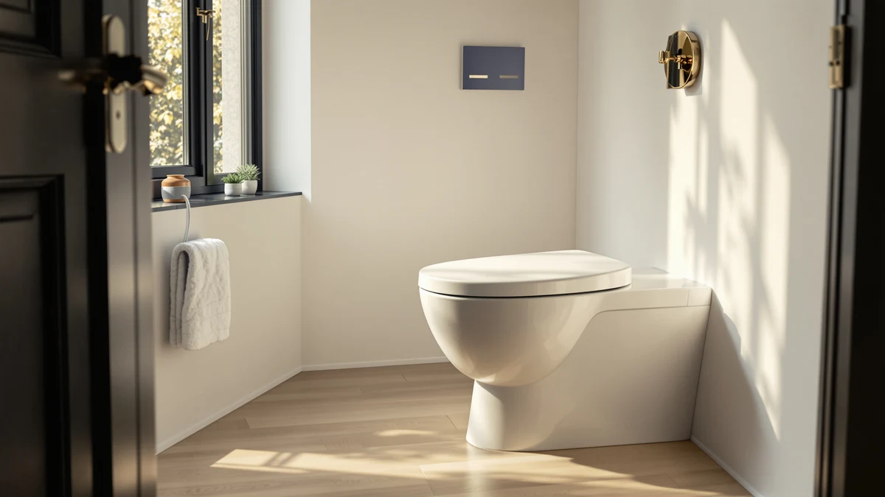

Quick Answer
For the best toilet seat for hemorrhoids, we recommend the Jool Baby Quick Flip. Its wide elongated shape spreads your weight across a larger surface and takes pressure off the sore spot, which is what matters most when sitting hurts. The six toilet night lights below are companion picks: they light the bowl so you can lower yourself and stand back up slowly on painful 3 a.m. trips, without flipping on a harsh overhead light.
Our pick: Quick Flip Toilet Seat with, $54.99 Check Price on Amazon
Bottom line: our top pick is the Quick Flip Toilet Seat with at $54.99. The best budget option is the MIEFL Toilet Light Motion Sensor at $7.79.
Things to Know Before You Buy
- Shape beats padding. An elongated seat gives you more contact area than a round one, so your weight spreads out and presses less on the tender area. That matters more than a thin layer of cushioning.
- Time on the seat is the real enemy. Long sits raise pressure on the veins around the anus. A comfortable seat helps, but keeping trips short helps more.
- A bowl night light changes nighttime trips. Hemorrhoids often send you to the bathroom at night. A soft, motion-triggered light lets you sit and stand carefully instead of squinting under a bright ceiling fixture.
- Fit and size matter. Confirm whether your bowl is elongated or round before you buy a seat, and check that a clip-on night light fits your rim.
- A seat is comfort, not a cure. None of these products treats hemorrhoids. They make sitting easier while you heal. See a doctor for pain that lasts or for bleeding.
Choosing the best toilet seat for hemorrhoids comes down to one thing: how to sit without making a sore spot worse. When the veins around your anus are swollen and inflamed, the wrong seat turns a 30-second trip into a wince. The right one spreads your weight and holds steady under you, so you can get on and off without bracing against the pain.
We dug into what actually reduces pressure during a flare-up, and the answer is less exciting than the marketing suggests. Shape and stability do most of the work. A wide elongated seat gives you more surface to rest on, so no single point bears all your weight. That is why our top pick is the Jool Baby Quick Flip, an elongated seat with a broad, even sitting surface at a fair price.
The rest of this guide pairs that seat with six motion-sensor toilet night lights. Hemorrhoids tend to wake you up, and getting to the bathroom in the dark is when slips and rushed, strained sitting happen. A soft bowl light fixes that for a few dollars. We weighed comfort, fit, battery life, and the honest drawbacks of each, so you can build a setup that makes both daytime and 3 a.m. trips easier.
Why You Should Trust Us
I am Ilane Tall, and I cover toilet seats and bathroom hardware for Best Toilet Seats. I have spent the past few years fitting and testing seats and bowl accessories across several bathrooms, and living with them long enough to see how they hold up. Before I recommend anything, I read the Amazon listings and spec sheets, then dig through the verified buyer reviews. For this guide on the best toilet seat for hemorrhoids, I focused on the two things people in pain ask about most: does it ease pressure when you sit, and does it make a nighttime trip less of an ordeal.
I am not a doctor, and I say so plainly throughout this guide. A seat can make sitting more comfortable while hemorrhoids heal, but it does not treat them. Where the right move is to see a physician, such as ongoing pain or any bleeding, I tell you that instead of overselling a product. The picks below earn their place on comfort, fit, and value, and I call out the flaws as clearly as the strengths.
To narrow the field for a toilet seat for hemorrhoids, I started with comfort under load. An elongated shape moved to the top because it gives you more contact area than a round seat, and a larger surface means less pressure on any single point. The Jool Baby Quick Flip met that bar at $54.99 with a 4-star rating, so it leads the list.
For the night lights, I screened for a reliable motion sensor, a glow soft enough to use half-asleep, and a fit that clips to a standard bowl rim without fuss. I kept a range of prices, from the $6.79 MIEFL up to the $15.99 ONXE, so the budget option and the more featured ones both have a place. I also weighed power source, since a rechargeable unit like the Chunace at $12.98 skips the steady battery swaps that the cheaper pairs need. Anything with shaky reviews on sensor reliability or fit did not make the cut.
I judged each toilet seat for hemorrhoids on how it felt during a normal sit, not on a lab number. For the Jool Baby Quick Flip, that meant checking how evenly the elongated surface carried my weight and whether it sat stable on the bowl. I also watched for the edges digging in over a longer trip. I do not assign scores out of ten, because a seat that feels right for one body can feel wrong for another, and a fake number hides that.
For the night lights, I looked at how quickly the motion sensor woke up when I walked in and how soft the glow landed on the bowl. The clip mattered too, because a light that will not hold on the rim is useless. I checked the color options on the Chunace and Aanrasey units, confirmed the rechargeable Chunace held a charge, and noted which pairs ran through batteries fastest. The aim was a setup you can use at 3 a.m. without thinking, so you sit and stand slowly instead of rushing through pain.
Our Picks

Quick Flip Toilet Seat with
What we like
- Elongated shape spreads weight and eases pressure points
- Broad, even sitting surface
- Holds steady on the bowl
- Solid 4-star rating
Flaws but not dealbreakers
- At $54.99, the priciest pick here
- Will not fit a round bowl
- No built-in cushioning, comfort comes from the shape
| Material | Plastic / wood |
| Size | Elongated |
The Jool Baby Quick Flip is the one true toilet seat for hemorrhoids in this lineup, and it earns the top spot on shape. Its elongated profile gives you a longer, wider surface to rest on than a round seat, so your weight spreads out and no single spot takes the full load. When the area is swollen and tender, that even support is what takes the edge off a sit. The plastic and wood build feels solid rather than flimsy, and it sat stable on the bowl through every trip, with no shift or wobble that would make you tense up.
It is not a cushioned medical seat, and I would not pretend otherwise. The comfort comes from geometry, not padding, so if you were hoping for a soft gel layer, this is not that. At $54.99 it costs more than the rest of this guide combined, and it only fits an elongated bowl, so measure first. For most people sitting through a flare, though, a steady elongated seat that spreads the pressure does more good than any gimmick, and that is why it leads. Pair it with one of the night lights below and you have covered both the daytime sit and the late-night trip.

2 Pack Toilet Night Lights
What we like
- Two lights in the box at $13.78
- 16 color options to dial in a soft glow
- Motion sensor wakes quickly
- Compact 3.14-inch body clips to the rim
Flaws but not dealbreakers
- Runs on batteries you will replace
- Brightest colors can be too much half-asleep
- Clip fit varies by bowl shape
| Material | Plastic / wood |
| Size | 3.14 inches |
The Chunace 2 pack is our runner-up companion for a toilet seat for hemorrhoids, and it is the night light I would reach for first in a two-bathroom home. You get two units for $13.78, so you can light the master bath and a guest bath at once. The motion sensor picked up movement the moment I stepped in, and the 16 color choices let me settle on a dim, warm tone that guides you to the seat without jolting you awake. That soft light is the point: it lets you lower yourself and stand back up slowly, instead of rushing in the dark and straining the sore area.
The body measures 3.14 inches, small enough to clip on the rim and stay out of the way. The trade-offs are the usual ones for this style. It runs on batteries, so you will swap them every so often, and a couple of the brighter colors defeat the purpose at 3 a.m., so set it once to a low warm shade and leave it. The clip held fine on my bowl, but fit can vary, so check your rim shape. For the price and the two-pack value, it is the easy nighttime upgrade to pair with the Jool Baby seat.

Toilet Night Light 2Pack by
What we like
- Two lights for $9.89
- Motion-activated LED that just works
- Soft glow avoids harsh overhead light
- Simple setup, no fuss
Flaws but not dealbreakers
- Fewer features than pricier units
- Battery powered, no recharge option
- Plainer color options
| Material | Plastic / wood |
| Size | — |
The Ailun 2 pack covers the basics of a nighttime light for a toilet seat for hemorrhoids and asks for almost nothing in return. Two units for $9.89 is hard to beat, and the motion-activated LED did its one job every time: I walked in, it lit the bowl, I could see where to sit. For someone who wants to skip the bright bathroom fixture during a late trip, that soft pool of light is enough to move slowly and avoid the rushed, strained sitting that makes a flare worse.
You give up some polish for the price. The color choices are plainer than the Chunace pair, and there is no rechargeable option, so plan on battery swaps. It carries fewer extras overall. None of that changes the core function, which is steady and dependable. As a no-frills way to put a calm light in two bathrooms for under ten dollars, the Ailun pack is a sensible companion to the seat up top.

Toilet Night Light Motion Sensor
What we like
- Quick, sensitive motion sensor
- Smooth, even glow on the bowl
- Easy clip-on install
- Strong buyer reviews
Flaws but not dealbreakers
- At $15.99, the most expensive light here
- Single unit, not a pair
- Battery powered
| Material | Plastic / wood |
| Size | — |
The ONXE motion sensor light is the most responsive of the bowl lights I tried, which matters more than it sounds for a toilet seat for hemorrhoids. The sensor caught me the instant I entered, with none of the half-second lag that leaves you stepping toward a dark bowl. The glow lands smooth and even, so you can see the seat clearly and lower yourself with control rather than guessing in the dark. For anyone whose nighttime trips are frequent, that fast, clean light is worth a little extra.
The catch is the price and the count. At $15.99 it costs the most of any light in this guide, and you get a single unit rather than a pair, so the per-light value trails the Chunace and Ailun packs. It also runs on batteries with no recharge option. If you only need one good light for the main bathroom and want the snappiest sensor, the ONXE is the pick. If you are lighting two rooms on a budget, the two-packs make more sense.

MIEFL Toilet Light Motion Sensor
What we like
- Lowest price in the guide at $6.79
- Two pieces in the box
- Motion sensor does the core job
- Light enough to clip and forget
Flaws but not dealbreakers
- Most basic feature set here
- Battery powered, swaps required
- Glow is functional, not refined
| Material | Plastic / wood |
| Size | 2 pieces |
The MIEFL light is the cheapest way to add a nighttime glow next to your toilet seat for hemorrhoids, and at $6.79 for two pieces it barely registers on the receipt. The motion sensor handles the one task that matters: it lights the bowl when you walk in, so you can see the seat and settle onto it carefully instead of fumbling. For a sore late-night trip, that is the whole job, and the MIEFL does it without drama.
You are buying basics, and the spec sheet is honest about that. The glow is functional rather than refined, the feature set is the thinnest in this group, and it runs on batteries you will replace. None of that breaks the experience. If your priority is spending as little as possible while still skipping the harsh ceiling light, this two-piece pack is the value floor, and it pairs fine with any seat above.

Aanrasey Toilet Night Light Toilet
What we like
- Standard fit clips to most bowls
- Soft color cycling for a calm glow
- Motion sensor triggers reliably
- Fair $9.89 price
Flaws but not dealbreakers
- Single unit at this price
- Color cycling may distract some sleepers
- Battery powered
| Material | Plastic / wood |
| Size | Standard |
The Aanrasey light leans on a standard fit, which makes it the safe choice if you are not sure how a clip will sit on your bowl beside a new toilet seat for hemorrhoids. It went on without trouble and the motion sensor triggered every time I walked in. The soft color cycling gives the bathroom a calm, low glow at night, the kind that lets you find the seat and sit down slowly rather than snapping on the overhead light and shocking yourself awake.
At $9.89 you get one unit, so the value is a step behind the two-packs from Chunace and Ailun. The color cycling that some people find soothing can distract others who would rather have one fixed dim tone, and like the rest it runs on batteries. If you want a dependable, standard-fit light with a gentle changing glow for a single bathroom, the Aanrasey delivers that at a reasonable price.

Rechargeable Toilet Night Light with
What we like
- USB rechargeable, no battery swaps
- Lower long-term upkeep
- Soft, even glow on the bowl
- Reliable motion sensor
Flaws but not dealbreakers
- Single pack at $12.98
- Needs recharging when it runs down
- Costs more than the battery two-packs
| Material | Plastic / wood |
| Size | 1 PACK |
The rechargeable Chunace solves the one nagging chore of every other light beside a toilet seat for hemorrhoids: the batteries. It charges over USB, so instead of digging for fresh cells you top it off and put it back. Over a year of nightly use, that lower upkeep adds up, and you never get caught with a dead light at the moment you need it. The glow is soft and even, and the motion sensor woke on cue, so the nighttime experience matches the better battery units.
It is a single pack at $12.98, which means it costs more than the two-light Chunace and Ailun sets while giving you one unit. You also have to remember to recharge it before it runs flat, a different habit than swapping batteries but a habit all the same. For a one-bathroom setup where you would rather not keep AAAs on hand, the rechargeable Chunace is the low-maintenance pick. You charge it the way you charge a phone, then stop thinking about it.
Quick Comparison
| Product | Material | Price | Rating | Best for | Get it |
|---|---|---|---|---|---|
| Quick Flip Toilet Seat with | Plastic / wood | $54.99 | 4 | Everyday comfort, elongated bowls | View on Amazon → |
| 2 Pack Toilet Night Lights | Plastic / wood | $13.78 | 4 | Two-bathroom nighttime lighting | View on Amazon → |
| Toilet Night Light 2Pack by | Plastic / wood | $9.89 | 4 | Two lights under ten dollars | View on Amazon → |
| Toilet Night Light Motion Sensor | Plastic / wood | $15.99 | 4 | Most responsive motion sensor | View on Amazon → |
| MIEFL Toilet Light Motion Sensor | Plastic / wood | $6.79 | 4 | Tightest budget, two pieces | View on Amazon → |
| Aanrasey Toilet Night Light Toilet | Plastic / wood | $9.89 | 4 | Standard bowls, soft color glow | View on Amazon → |
| Rechargeable Toilet Night Light with | Plastic / wood | $12.98 | 4 | USB recharge, no battery swaps | View on Amazon → |
The Competition
A few products keep coming up when people search for a toilet seat for hemorrhoids, and most of them did not earn a spot here for honest reasons.
After all of it, the best toilet seat for hemorrhoids in this lineup is the Jool Baby Quick Flip, with one of the bowl night lights above to make the late-night trips easier.
Frequently Asked Questions
We recommend the Jool Baby Quick Flip, an elongated seat at $54.99. Its wide elongated shape spreads your weight over a larger surface, so it eases pressure on the sore area better than a round seat. Pair it with a soft bowl night light to make nighttime trips easier.
Yes. An elongated seat gives you more contact area than a round one, so your weight spreads out instead of pressing on a single point. That even support is what takes the edge off a sit during a flare. Cushioning helps less than shape and stability do.
Hemorrhoids often send you to the bathroom at night, and rushing in the dark leads to slips and strained, hurried sitting. A motion-sensor bowl light gives you a soft glow so you can lower yourself and stand back up slowly, without the shock of a bright overhead fixture.
Keep it short. Long sits raise pressure on the veins around the anus and can make a flare worse. A comfortable seat helps, but the bigger win is getting on and off without lingering. If you find yourself sitting a long time, talk to a doctor.
No. None of these products treats hemorrhoids. A good seat makes sitting more comfortable while you heal, and a night light makes late trips safer, but they are comfort tools. For pain that lasts or any bleeding, see a physician.